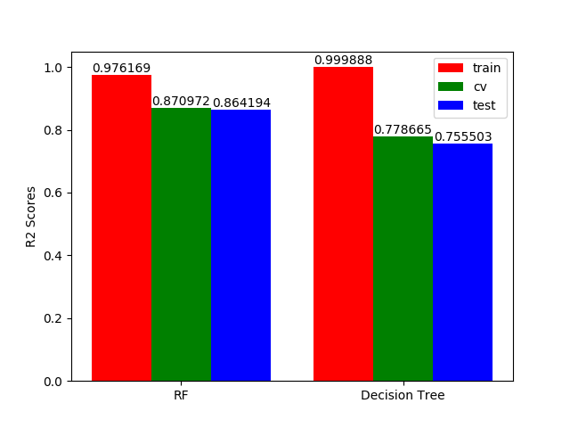

User Guide¶
This guide explains how to use this package and obtain results published in our paper.
Hypothese 1¶
The results for the first hypothese can be re-generated automatically by executing the following command:
$ run-house-prices-all-pred
R2 performance on the training, cv and testing set for a RF algorithm and a Decision Tree algorithm when all the parameters are given at the input.

Hypothese 2¶
The results for the second hypothese can be re-generated automatically by executing the following command:
$ run-house-prices-relevant-pred
R2 performance on the training, cv and testing set for a RF algorithm and a Decision Tree algorithm when only the relevant parameters are given at the input.
Conclusion¶
From the results obtained above, one can conclude that the two initial hypotheses are not rejected. Indeed, the RF algorihtm gives good performance for both the cases; when all the parameters are selected and when only the relevant parameters are selected.